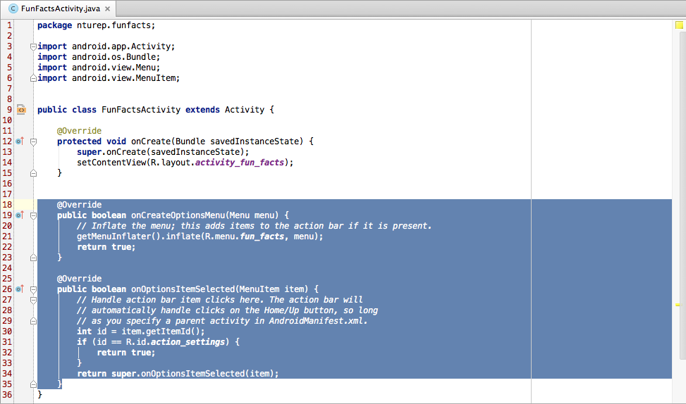
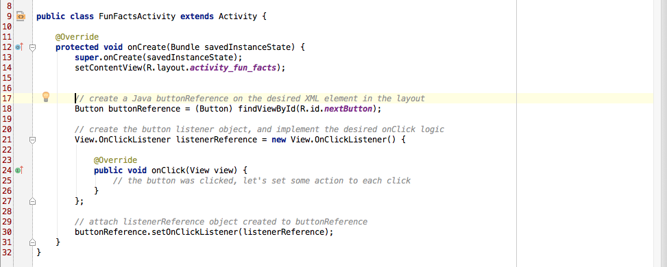
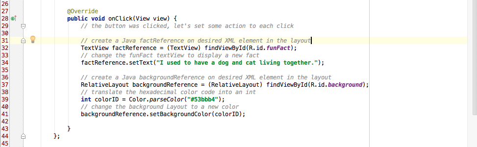

The methods onCreateOptionsMenu and onOptionsItemSelected (as highlighted) are used to configure the app's action bar. They aren't required here and can be removed for clarity

2. Create a button listener on nextButton
Understand lines 17 - 31 and attempt to programme it yourself. If you are prompted to import any class, do so

3. Implement the logic that runs when nextButton is clicked
Understand lines 31 - 41 and attempt to programme it yourself

Test run again with an Android device or an emulator.
Refer to or copy the following code if you encounter major bugs: